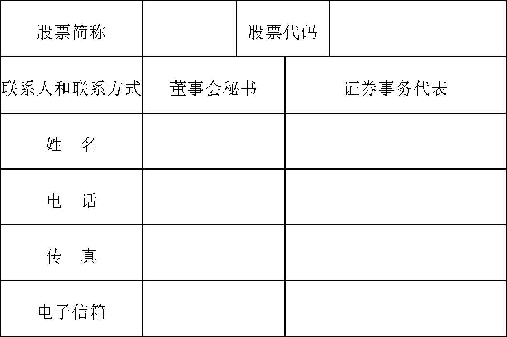
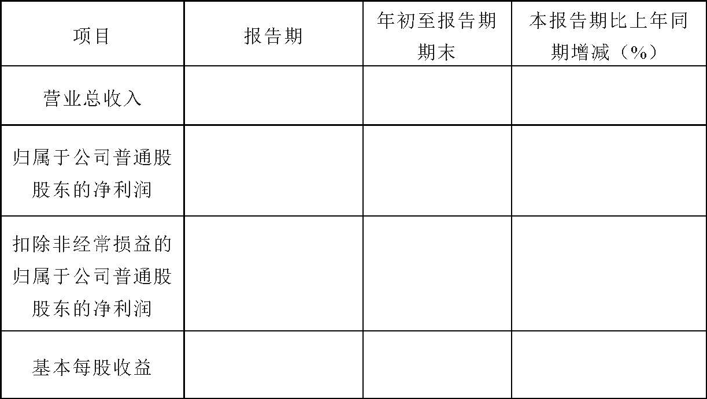
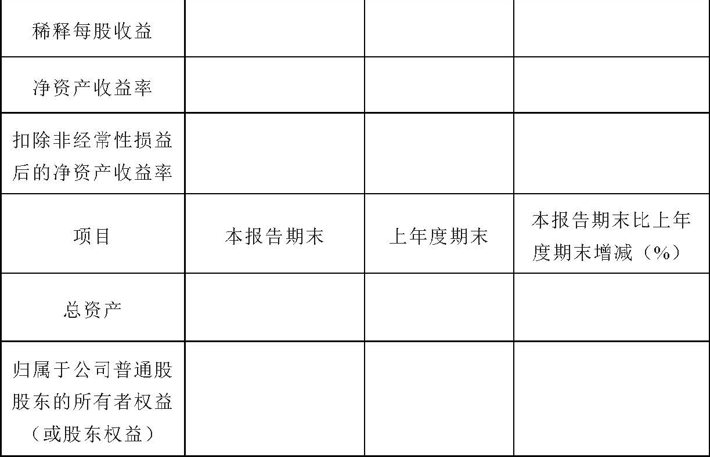
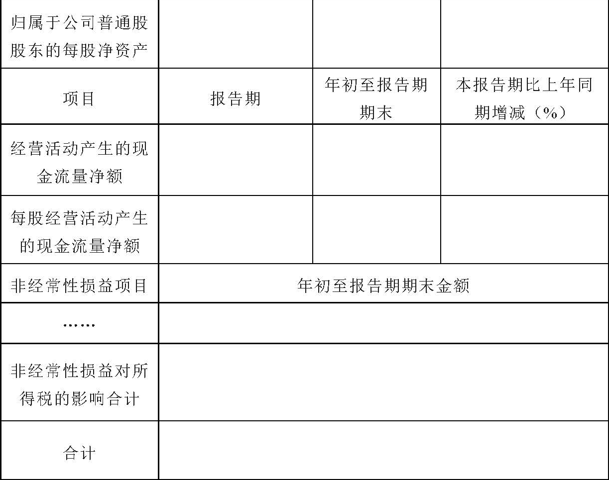
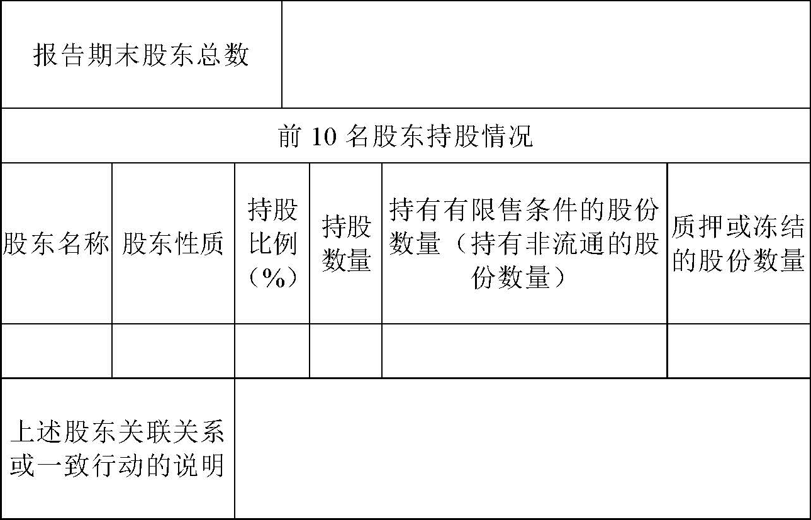
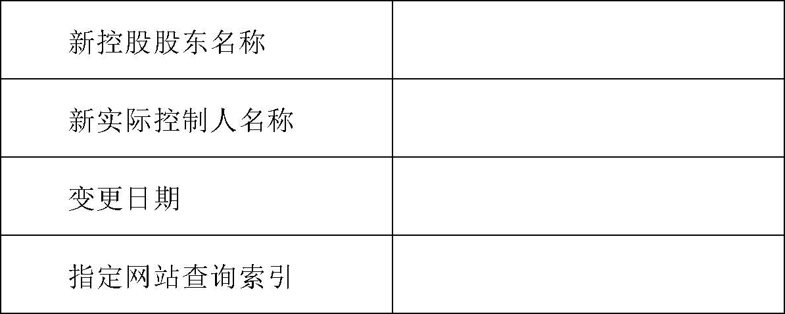

公开发行证券的公司信息披露内容与格式准则第31号——创业板上市公司半年度报告的内容与格式（2013年修订）
第一章 总则
第一条 为规范创业板上市公司半年度报告的编制及信息披露行为，保护投资者的合法权益，依据《公司法》、《证券法》等法律、法规及中国证券监督管理委员会（以下简称中国证监会）的有关规定，制定本准则。
第二条 凡根据《公司法》、《证券法》在中华人民共和国境内公开发行股票并在深圳证券交易所创业板市场上市的股份有限公司（以下简称公司）应当按照本准则的要求编制和披露半年度报告。
第三条 本准则的规定是对半年度报告信息披露的最低要求。凡对投资者投资决策有重大影响的信息，不论本准则是否有明确规定，公司均应当披露。
第四条 本准则的某些具体要求对公司确实不适用的，经证券交易所批准后，公司可以根据实际情况在不影响披露内容完整性的前提下做出适当修改。
第五条 由于商业秘密等特殊原因，导致本准则规定的某些信息确实不便披露的，公司可以向证券交易所申请豁免，经证券交易所批准后，公司可不予披露。公司应当在相关章节说明未按本准则要求进行披露的原因。商业秘密的确定应保持境内外内容一致。
第六条 在不影响信息披露完整性和不致引起阅读不便的前提下，公司可以采用相互引证的方法，对各相关部分的内容进行适当的技术处理，以避免不必要的重复，保持文字简洁。
第七条 公司半年度报告的全文应当按本准则第二章的要求编制，摘要的编制应遵循本准则第三章的要求，并按照附件的格式进行披露。
半年度报告的报告期是指年初至半年度期末。
第八条 同时在境内、境外证券交易所上市的公司，如果境外证券监管部门对半年度报告的编制和披露要求与本准则不一致，应遵循报告披露内容从多不从少，报告要求从严不从宽的原则办理，并应在同一时间公布半年度报告。
第九条 半年度报告中的财务报告可以不经审计，但中国证监会和证券交易所另有规定的除外。
第十条 公司在编制半年度报告时应当遵循如下一般要求：
（一）半年度报告中引用的数字应当采用阿拉伯数字，货币金额除特别说明外，通常指人民币金额，并以元、千元、万元、百万元或亿元为单位。
（二）公司可以根据有关规定或其他需求，编制半年度报告外文译本，但应努力保证中外文文本的一致性，并在外文文本上注明：“本报告分别以中、英（或日、法等）文编制，在对中外文文本的理解发生歧义时，以中文文本为准。”
（三）半年度报告封面应当载明公司的中文名称、“半年度报告”字样、报告期间，也可以载明公司的外文名称、徽章、图案等。
（四）公司可以在半年度报告正文前刊载宣传本公司的照片、图表或致投资者信，但不得刊登任何祝贺性、恭维性或推荐性的词句、题字或照片，不得含有夸大、欺诈、误导或内容不准确、不客观的词句。
（五）半年度报告中若涉及行业分类，必须遵循中国证监会有关上市公司行业分类的规定；公司可以在此基础上，增加披露使用其它行业分类的数据、资料作为参考。
第十一条 在半年度报告披露前，任何当事人不得泄露与其有关的信息，或利用这些信息谋取不正当利益。
第十二条 公司应当在每个会计年度上半年结束之日起2个月内将半年度报告及摘要刊登在中国证监会指定的网站和公司网站上；同时在至少一种中国证监会指定的报纸上刊登“本公司XXXX年半年度报告及摘要已于X年X月X日在中国证监会指定的创业板信息披露网站上披露，请投资者注意查阅”的提示性公告。公司可以将半年度报告刊登在其他网站和其他报刊上，但不得早于在中国证监会指定的网站披露的时间。
第十三条 公司应当在半年度报告披露后及时将半年度报告原件或有法律效力的复印件备置于公司办公地点，以供股东和投资者查阅。
第十四条 公司董事会、监事会及董事、监事、高级管理人员应当保证半年度报告内容的真实性、准确性、完整性，承诺其中不存在虚假记载、误导性陈述或重大遗漏，并就该保证承担个别和连带责任。
如有董事、监事、高级管理人员对半年度报告内容的真实性、准确性、完整性无法做出保证或存在异议的，应当单独陈述理由和发表意见。未参会董事应当单独列示其姓名、职务以及未出席原因。
第十五条 特殊行业公司，除执行本准则规定外，还应执行中国证监会就该行业信息披露制定的特别规定。
第二章 半年度报告正文
第一节 重要提示、释义
第十六条 公司应当在半年度报告全文的显要位置刊登如下重要提示：“本公司董事会、监事会及董事、监事、高级管理人员保证本报告所载资料不存在任何虚假记载、误导性陈述或者重大遗漏，并对其内容的真实性、准确性、完整性承担个别及连带责任。”
如有董事、监事、高级管理人员对半年度报告内容的真实性、准确性、完整性无法做出保证或存在异议的，公司应披露如下声明：“XX董事、监事、高级管理人员无法保证本报告内容的真实性、准确性、完整性，理由是：……，请投资者特别关注。”
公司还应单独披露未出席董事会会议董事的姓名、职务以及未出席原因。
公司负责人、主管会计工作负责人及会计机构负责人（会计主管人员）应当声明：保证半年度报告中财务报告的真实、完整。
公司应当提示经董事会审议的报告期内的半年度利润分配预案或公积金转增股本预案。
第十七条 财务报告已经会计师事务所审计并被出具标准审计报告的，公司应当明确表述“公司半年度财务报告已经XX会计师事务所审计并出具标准审计报告。”
财务报告已经会计师事务所审计并被出具带强调事项段或其他事项段的无保留意见、保留意见、否定意见或无法表示意见的审计报告（以下简称“非标准审计报告”），公司应说明审计意见涉及事项的披露位置，并作以下提示：“公司半年度财务报告已经XX会计师事务所审计并出具带强调事项段或其他事项段的无保留意见、保留意见、否定意见或无法表示意见的审计报告，本公司董事会、监事会对相关事项已作详细说明，请投资者注意阅读。”
第十八条 公司应当对半年度报告中投资者难于理解及有特定含义的术语做出解释。
第二节 公司基本情况简介
第十九条 公司应当披露如下事项：
（一）法定中、英文名称及缩写；
（二）法定代表人；
（三）董事会秘书及董事会证券事务代表的姓名、联系地址、电话、传真及电子信箱；
（四）公司注册地址，办公地址及其邮政编码，互联网网址，电子信箱；
（五）公司选定的信息披露报刊名称，登载半年度报告的中国证监会指定网站的网址，半年度报告备置地点；
（六）公司股票简称和股票代码。
第二十条 公司应采用数据列表方式，提供截至报告期末和上年末（或报告期和上年同期）公司主要会计数据和财务指标，包括以下各项：营业总收入、净利润、扣除非经常性损益后的净利润、基本每股收益和稀释每股收益、净资产收益率、扣除非经常损益后的净资产收益率，总资产、所有者权益、每股净资产、经营活动产生的现金流量净额、每股经营活动产生的现金流量净额。同时说明扣除的非经常性损益项目及其金额和所得税影响额。
上述会计数据及财务指标应按照《公开发行证券的公司信息披露内容与格式准则第30号——创业板上市公司年度报告的内容与格式》（2012年修订）（以下简称《年度报告准则》）以及中国证监会颁布的其他有关信息披露规章或规范性文件计算填列，涉及股东权益的数据及指标，应采用归属于公司普通股股东的股东权益；涉及利润的数据及指标，应采用归属于公司普通股股东的净利润。
同时按国际会计准则编制财务报告的公司，还应披露分别按国内、国际会计准则编制的财务报告中的报告期的净利润、报告期末的净资产并说明其差异。
第二十一条 公司应在主要会计数据和财务指标摘要之后刊登重大风险提示。公司对风险因素的描述应当围绕公司的经营情况，遵循重要性原则，着重披露报告期新增的、可能对公司下一报告期经营产生不利影响的重大风险，并根据实际情况，披露已经或将要采取的措施。
第三节 董事会报告
第二十二条 公司董事会报告中应当对财务报告的数据和其他必要的统计数据，以及报告期内发生和未来可能发生的重大事项进行讨论、分析，以便于投资者了解其财务状况、经营成果及未来变化情况。公司披露董事会报告应当遵守创业板《年度报告准则》第二十三条所列原则。
第二十三条 董事会报告应当重点分析公司在报告期内的财务状况和经营成果。内容至少包括：
（一）概述公司报告期内总体经营情况，营业收入、费用、营业利润、净利润及经营活动现金流等项目的同比变动情况，说明引起变动的主要影响因素以及对报告期利润产生重大影响的其他经济业务活动。
（二）公司应分析说明驱动业务收入变化的具体因素，例如产销量、订单或劳务的结算比例等因素。
公司应披露报告期重大的已签订单情况，以及前期订单在本报告期的进展和本报告期新增订单的完成比例。临时报告已经披露过的情况，公司可只提供相关披露索引。
（三）主营业务的范围及经营状况，对占报告期营业收入10%以上（含10%）的产品或服务，应分别列示其营业收入、营业成本、毛利率。
（四）若报告期内利润构成、主营业务或其结构、主营业务盈利能力发生重大变化的，应予以说明；报告期内产品或服务发生重大变化或调整的，公司应介绍已推出或宣布将推出的新产品及服务，并说明可能对公司未来经营及业绩的影响。
（五）报告期内前5大供应商或客户发生变化的，公司应说明变化的具体情况并分析对公司未来经营的影响。
（六）如来源于单个参股公司的投资收益对公司净利润影响达到10%以上（含10%），应介绍该公司业务性质、主要产品或服务和净利润等情况。
（七）公司应披露重要研发项目在本报告期的进展情况并预计对公司未来发展的影响。
（八）报告期内如果发生因设备或技术升级换代、核心技术人员辞职、特许经营权丧失、重要无形资产发生不利变化等导致公司核心竞争能力受到严重影响的，应详细说明具体情况及公司拟采取的措施。
（九）公司应结合公司业务发展规模、经营区域、产品、竞争对手等情况，介绍与公司业务相关的宏观经济层面或外部经营环境的发展现状和变化趋势，以及公司的行业地位或区域市场地位的变动趋势。
（十）公司应披露年度经营计划在报告期内的执行情况，年度经营计划发生重大变更的，应说明变更的具体原因、变更的内容及对公司年度经营业绩可能产生的影响。
（十一）公司应当遵循重要性原则披露可能对公司未来发展战略和经营目标的实现产生不利影响的所有风险因素，公司应当针对自身特点进行风险揭示，披露的内容应当充分、准确、具体，应尽量采取定量的方式分析各风险因素对公司当期及未来经营业绩的影响。同时公司可以根据实际情况，介绍已（或拟）采取的措施，对策和措施应当具体并具备可操作性。
第二十四条 董事会应当说明报告期的投资情况，包括但不限于以下方面：
（一）在报告期内募集资金或报告期之前募集资金的使用延续到报告期内的，公司应披露有关投资项目的实际进度及收益情况，投资项目运营中可能出现的风险和重大不利变化；未达到计划进度和收益的，应解释原因；尚未使用募集资金的用途；募集资金用途发生变更的，应说明变更原因、是否已履行变更程序、新的用途、实际进度与收益情况。
（二）重大非募集资金投资项目的实际进度和收益情况。
（三）对外股权投资的情况。公司应当对持有其他上市公司股权，持有商业银行、证券公司、保险公司、信托公司和期货公司等金融企业股权的情况进行重点披露，包括最初投资成本、期初持股比例、期末持股比例、期末账面值等。
（四）非金融类公司委托理财及衍生品投资的情况。公司应当披露资金来源、合作方、投资份额、投资期限、产品类型、预计收益、投资盈亏、是否涉诉等。如公司有委托贷款事项，应当披露委托贷款借款人、借款用途、抵押物或担保人，以及展期、逾期或诉讼事项及风险应对措施。
第二十五条 董事会应当将报告期实际经营成果与招股说明书、募集说明书、资产重组报告书或定期报告披露的盈利预测、有关计划或展望进行比较，说明完成预测或计划的进度情况。
第二十六条 董事会如果预测本期至下一报告期期末的净利润可能为亏损、实现扭亏为盈或者与上年同期相比发生大幅度变动，应当予以警示。
第二十七条 财务报告已经会计师事务所审计，并被出具非标准审计报告的，董事会应就所涉及的事项予以说明。
上年年度报告中的财务报告被注册会计师出具非标准审计报告的，董事会应就所涉及事项的变化及处理情况予以说明。
第二十八条 公司应当披露以前期间拟定、在报告期实施的利润分配方案、公积金转增股本方案的执行情况，以及现金分红政策的执行情况。
如董事会在审议半年度报告时制定利润分配预案、公积金转增股本预案的，公司应当充分说明上述预案是否符合公司章程及审议程序的规定，是否充分保护中小投资者的合法权益，独立董事是否发表意见。
第四节 重要事项
第二十九条 公司应披露重大诉讼、仲裁事项。包括在报告期内发生及以前期间发生但持续到报告期的重大诉讼、仲裁事项，包括进展情况或审理结果，及对经营成果与财务状况的影响（包括由此产生的损益占报告期净利润的比例等，本节下同）。对已经结案的重大诉讼、仲裁事项，还应说明其执行情况。如果以上诉讼、仲裁事项已在临时报告披露且无后续进展的，则可只披露事项概述，并提供临时报告披露网站的相关查询索引。
如报告期内公司无重大诉讼、仲裁事项，应明确陈述“本报告期公司无重大诉讼、仲裁事项”。
第三十条 公司应当披露在报告期内发生及以前期间发生但持续到报告期的重大资产收购、出售及企业合并事项的简要情况及进程，说明上述事项对公司业务连续性、管理层稳定性的影响、对报告期经营成果与财务状况的影响，说明所涉及的金额及其占资产总额和利润总额的比例。
如公司收购、出售资产和企业合并事项已在临时报告披露且后续实施无变化的，仅需披露该事项概述，并提供临时报告披露网站的相关查询索引。
第三十一条 报告期内涉及股权激励方案的公司，应当披露股权激励方案的执行情况，包括实施股权激励方案所履行的相关程序及总体情况、股权激励基金提取及分配情况、股权激励股份来源情况、对激励对象的考核情况、对激励对象范围的调整情况、股权激励股份授予数量、股票期权授予及行权情况、股票期权行权价格及行权比例等的调整情况等，实施股权激励方案对公司报告期及未来财务状况和经营成果的影响。
如相关股权激励事项已在临时报告披露且后续实施无进展或变化的，仅需披露该事项概述，并提供临时报告披露网站的相关查询索引。
第三十二条 公司应当遵循如下规定，分类披露在报告期内发生的重大关联交易事项。若对于某一关联方，报告期内累计关联交易总额高于1000万元且占公司最近一期经审计净资产绝对值5%以上的，须披露关联交易方、交易内容、交易时间及披露时间等情况。如已在临时报告披露且后续实施无进展或变化的，仅需披露该事项概述，并提供临时报告披露网站的相关查询索引。
（一）与日常经营相关的关联交易，至少应披露以下内容：关联交易方、交易内容、定价原则、交易价格、交易金额、占同类交易金额的比例、结算方式及关联交易事项对公司利润的影响。可以获得同类交易市场价格的，应披露市场参考价格，实际交易价格与市场参考价格差异较大的，应说明原因；关联方之间存在大额销货退回的，应予说明。
公司按类别对本公司当年度将发生的日常关联交易进行总金额预计的，应披露日常关联交易事项在报告期内的实际履行情况。
（二）资产收购、出售发生的关联交易，至少应披露以下内容：关联交易方、交易内容、定价原则、资产的账面价值、评估价值（若有）、市场公允价值（若有）、交易价格、结算方式、交易对公司经营成果与财务状况的影响情况。交易价格与账面价值、评估价值或市场公允价值差异较大的，应说明原因。
（三）公司与关联方存在非经营性债权债务往来、担保等事项的，应披露形成的原因及对公司的影响。
（四）其他重大关联交易。
第三十三条 公司应当披露重大合同及其履行情况。包括（但不限于）：
（一）在报告期内发生或以前期间发生但延续到报告期的重大交易、托管、承包、租赁其他公司资产或其他公司托管、承包、租赁公司资产事项的信息，包括交易金额、期限以及对经营成果与财务状况的影响。
（二）在报告期内发生或以前期间发生但延续到报告期的重大担保合同信息，包括担保金额、担保期限、担保对象、担保类型（一般担保或连带责任担保）、担保的决策程序等。对于未到期担保合同，如有明显迹象表明可能承担连带清偿责任的担保事项，公司应予明确说明。
（三）在报告期内发生或以前期间发生但延续到报告期的重大委托他人进行现金资产管理的信息，包括受托人名称、委托金额、委托期限、报酬确定方式、实际收益、期末余额以及该项行为是否履行了必要的程序。
上述事项如已在临时报告披露且后续实施无进展或变化的，仅需披露该事项概述，并提供临时报告披露网站的相关查询索引。
第三十四条 公司或持有公司股份5%以上的股东、实际控制人、董事、监事、高级管理人员有在报告期内发生或以前期间发生但持续到报告期的承诺事项的，公司应当披露该承诺在报告期内的履行情况。
第三十五条 财务报告已经会计师事务所审计的，公司应当披露会计师事务所的名称、注册会计师的姓名以及审计费用。
更换会计师事务所的，公司应披露解聘原会计师事务所的原因，以及是否履行了必要的程序。
第三十六条 公司还应披露其他在报告期内发生的《证券法》第六十七条、《上市公司信息披露管理办法》第三十条所列的重大事件，以及公司董事会判断为重大事件的事项。
如前款所涉及重要事项已作为临时报告在指定网站披露，只需说明信息披露网站及披露日期。
第五节 股本变动和股东情况
第三十七条 对于报告期内的股份变动情况，公司应当按照中国证监会对公司股份变动报告规定的内容与格式进行编制。
对报告期内因送股、转增股本、配股、增发新股、非公开发行股票、权证行权、实施股权激励计划、企业合并、可转换公司债券转股、减资、内部职工股上市、债券发行或其他原因引起公司股份总数及股东结构变动、公司资产和负债结构变动的，应当予以说明。
第三十八条 公司股东数量及持股情况，应当按照中国证监会对公司股份变动报告规定的格式进行编制，披露以下内容：
（一）截至报告期末的股东总数。
（二）截至报告期末持有本公司5%以上股份的股东名称、报告期内股份增减变动的情况、报告期末持股数量、所持股份类别及所持股份质押或冻结的情况。如持股5%以上的股东少于10人，则应当列出至少前10名股东的持股情况。公司股票为融资融券标的证券的，股东持股数量应当按照其通过普通证券账户、信用证券账户持有的股票及其权益数量合并计算。
如前10名股东所持股份中包括无限售流通股股份、限售流通股股份，应分别披露其数额；如前10名股东之间存在关联关系或属于《上市公司收购管理办法》规定的一致行动人的，应予以说明。
如果有战略投资者或一般法人因配售新股成为前10名股东的，应予以说明，并披露约定持股期间的起止日期。
以上列出的前10名股东中应注明代表国家持股的单位或外资股东。
第三十九条 公司控股股东或实际控制人报告期内发生变化的，应当列明披露相关信息的指定媒体及日期。
第六节 董事、监事、高级管理人员情况
第四十条 公司应当披露报告期内董事、监事、高级管理人员持有本公司股份、股票期权、被授予的限售流通股股票数量的变动情况。
第四十一条 公司应当披露报告期内董事、监事、高级管理人员新聘或解聘的情况及原因。
第七节 财务报告
第四十二条 公司应当在半年度报告中披露比较式资产负债表、利润表、现金流量表、所有者权益变动表和财务报表附注。编制合并财务报表的公司，除提供合并财务报表外，还应提供母公司财务报表。
第四十三条 财务报告未经会计师事务所审计的，公司应当注明“未经审计”字样。财务报告经过审计的，若注册会计师出具标准审计报告，公司应明确说明注册会计师已出具标准审计报告；若注册会计师出具非标准审计报告，公司应披露审计报告正文。
第八节 备查文件目录
第四十四条 公司应当披露备查文件的目录，包括：
（一）载有法定代表人签名的半年度报告文本；
（二）载有单位负责人、主管会计工作负责人、会计机构负责人签名并盖章（如设置总会计师，还须由总会计师签名并盖章）的财务报告文本；
（三）载有会计师事务所盖章、注册会计师签名并盖章的审计报告文本（如有）；
（四）在其它证券市场披露的半年度报告文本（如有）；
（五）其他有关资料。
公司应当在办公场所备置上述文件的原件。当中国证监会、证券交易所要求提供或股东依据法规或公司章程要求查阅时，公司应及时提供。
第三章 半年度报告摘要
第一节 重要提示
第四十五条 公司应当在半年度报告摘要的显要位置刊登如下重要提示：“本公司董事会、监事会及董事、监事、高级管理人员保证本报告摘要所载资料不存在任何虚假记载、误导性陈述或者重大遗漏，并对其内容的真实性、准确性、完整性承担个别及连带责任。”
“本半年度报告摘要摘自半年度报告全文，报告全文同时刊载于……。投资者欲了解详细内容，应当仔细阅读半年度报告全文。”
其他重要提示内容应按照本准则第十六、十七条的规定披露。
第四十六条 公司应当以简易图表形式披露如下内容：
（一）股票简称、股票代码。如报告期末至半年度报告披露日期间公司股票简称发生变更，应当同时披露变更后的股票简称。
（二）公司董事会秘书和证券事务代表的姓名、电话、传真、电子信箱。
第二节 主要财务会计数据及股东变化
第四十七条 公司应采用数据列表方式，提供截至报告期末和上年末（或报告期和上年同期）公司主要会计数据和财务指标，包括以下各项：营业总收入、净利润、扣除非经常性损益后的净利润、基本每股收益和稀释每股收益、净资产收益率、扣除非经常损益后的净资产收益率、总资产、所有者权益、每股净资产、经营活动产生的现金流量净额、每股经营活动产生的现金流量净额。同时说明扣除的非经常性损益项目及其金额和所得税影响额。
第四十八条 公司应当列表披露截至报告期末的股东总数、报告期末前10名股东持股情况。公司控股股东或实际控制人报告期内发生变化的，应当列明披露相关信息的指定网站查询索引。
第三节 管理层讨论与分析
第四十九条 公司管理层应当简要介绍报告期的经营情况，主要围绕财务状况和经营成果，尽量选择当期重大变化的情况进行讨论，分析公司报告期内经营活动的总体状况，至少包括：
（一）提示主营业务的经营是否存在重大变化。对占公司主营业务收入或主营业务利润10%以上的产品，分别列示其销售收入、销售成本、毛利率，并提示是否存在变化。
（二）提示是否存在需要特别关注的季节性或周期性经营特征。
（三）若报告期内公司的营业收入、营业成本、归属于上市公司普通股股东的净利润总额或者构成较前一报告期发生重大变化的，应予以说明。
第四节 涉及财务报告的相关事项
第五十条 如与上一年度报告相比，公司会计政策、会计估计以及财务报表合并范围发生变化，或因报告期内重大会计差错更正而追溯重述的，公司应当予以披露，并分析其原因及影响。
第五十一条 如半年度财务报告已经审计，应当披露审计意见类型，若被出具带有强调事项段或其他事项段的无保留意见、保留意见、否定意见或无法表示意见的审计报告，公司董事会和监事会应当就所涉及事项作出说明。
第四章 附则
第五十二条 本准则所称“控股股东”、“实际控制人”、“关联方”、“关联交易”、“高级管理人员”等的界定按照《公司法》、《证券法》等法律法规以及《上市公司信息披露管理办法》等相关规定执行。
第五十三条 本准则自公布之日起施行。《公开发行证券的公司信息披露内容与格式准则第31号——创业板上市公司半年度报告的内容与格式》（证监会公告〔2010〕19号）同时废止。
附件：
半年度报告摘要披露格式
XXXX股份有限公司半年度报告摘要
§1 重要提示
1.1 本公司董事会、监事会及董事、监事、高级管理人员保证本报告摘要所载资料不存在任何虚假记载、误导性陈述或者重大遗漏，并对其内容的真实性、准确性、完整性承担个别及连带责任。
本半年度报告摘要摘自半年度报告全文，报告全文同时刊载于……。投资者欲了解详细内容，应当仔细阅读半年度报告全文。
1.2 如个别董事、监事、高级管理人员对半年度报告内容的真实性、准确性、完整性无法保证或存在异议的，应当声明：
XX董事、监事、高级管理人员无法保证本报告内容的真实性、准确性、完整性，理由是：……，请投资者特别关注。
1.3 如有董事未出席董事会，应当单独列示其姓名、职务以及未出席的原因。
1.4 财务报告已经会计师事务所审计并被出具标准审计报告的，公司应当明确表述“公司半年度财务报告已经XX会计师事务所审计并出具标准审计报告”。
如执行审计的会计师事务所出具了带强调事项段或其他事项段的无保留意见、保留意见、否定意见或无法表示意见的审计报告（以下简称“非标准审计报告”），应当特别提示：
公司半年度财务报告已经XX会计师事务所审计并被出具了带强调事项段或其他事项段的无保留意见（或保留意见、否定意见、无法表示意见）的审计报告，本公司董事会、监事会对相关事项已作详细说明，请投资者注意阅读。
1.5 公司简介

§2 主要财务会计数据和股东变化
2.1 主要财务会计数据



注：1.在报告期内公司因派发股票股利、公积金转增股本、拆股而增加或因并股而减少公司总股本，但不影响股东权益金额的，应当根据相关会计准则的规定按最新股本调整并列报基本每股收益和稀释每股收益。
2.如果报告期末至半年度报告披露日，公司股本因送红股、资本公积金转增股本的原因发生变化且不影响股东权益金额的，应当根据相关会计准则的规定按最新股本调整并列报基本每股收益和稀释每股收益。
3.本报告期对上年度财务数据进行了追溯调整或重述的，上年度末和上年同期应当同时列示追溯调整或重述前后的数据。
2.2 前10名股东持股情况表

注：股东性质包括国家、国有法人、境内非国有法人、境内自然人、境外法人、境外自然人等。
2.3 控股股东或实际控制人变更情况
□适用 □不适用

§3 管理层讨论与分析
管理层可以图表结合文字形式，简明、扼要地分析公司在报告期内的财务状况及经营成果。
§4 涉及财务报告的相关事项
4.1 与上年度财务报告相比，会计政策、会计估计和核算方法发生变化的，公司应当说明情况、原因及其影响。
4.2 报告期内发生重大会计差错更正需追溯重述的，公司应当说明情况、更正金额、原因及其影响。
4.3 与上年度财务报告相比，财务报表合并范围发生变化的，公司应当作出具体说明。
4.4 半年度财务报告已经审计，并被出具非标准审计报告的，董事会、监事会应当对涉及事项作出说明。